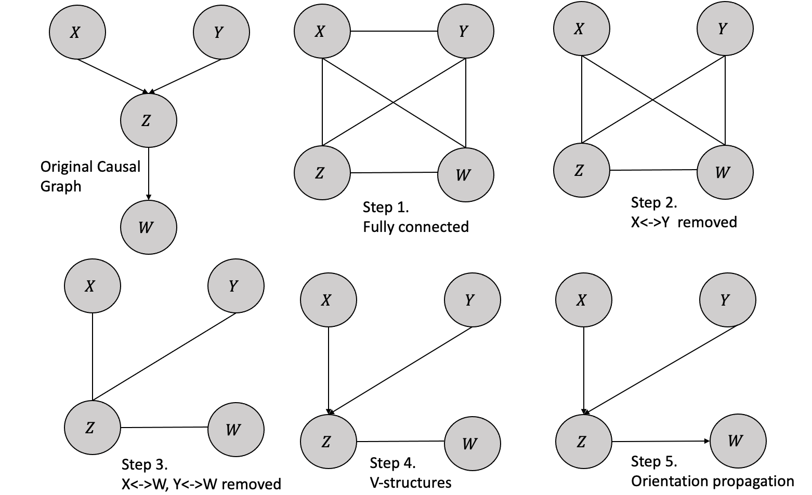
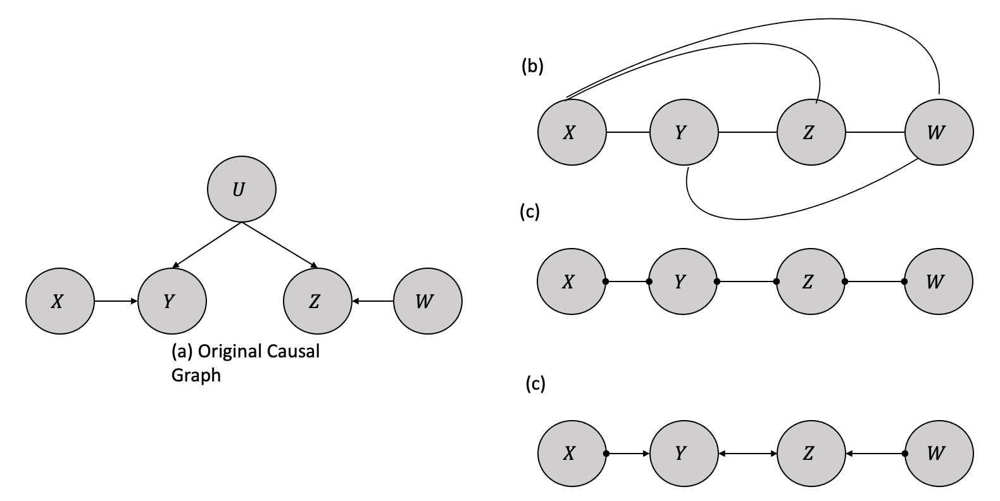
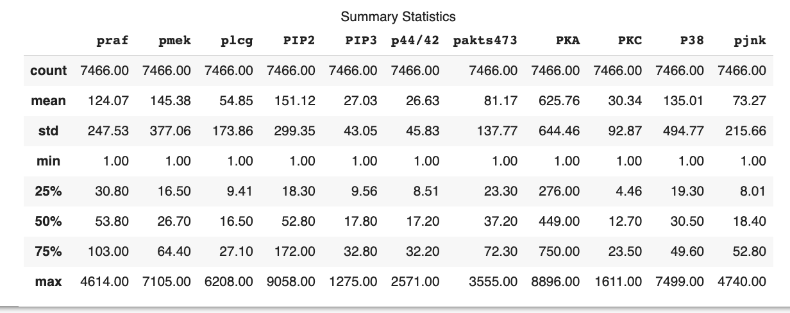
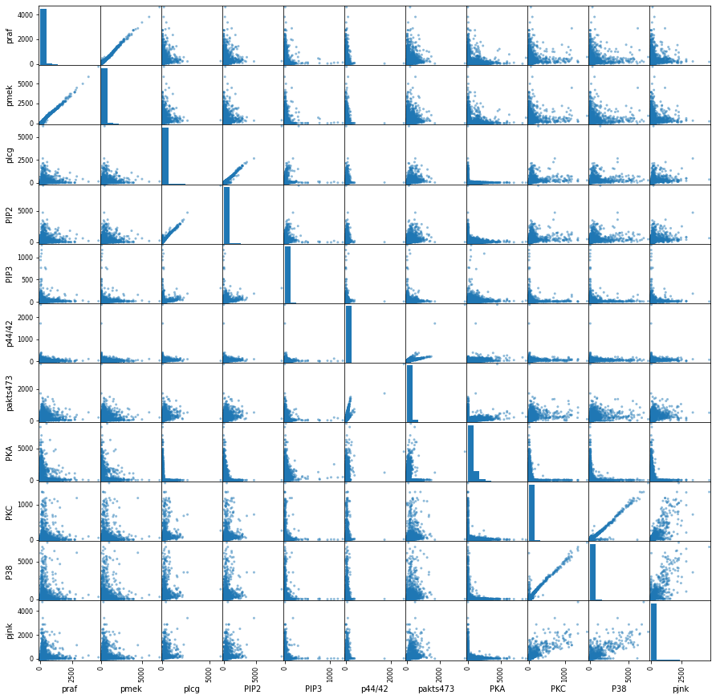
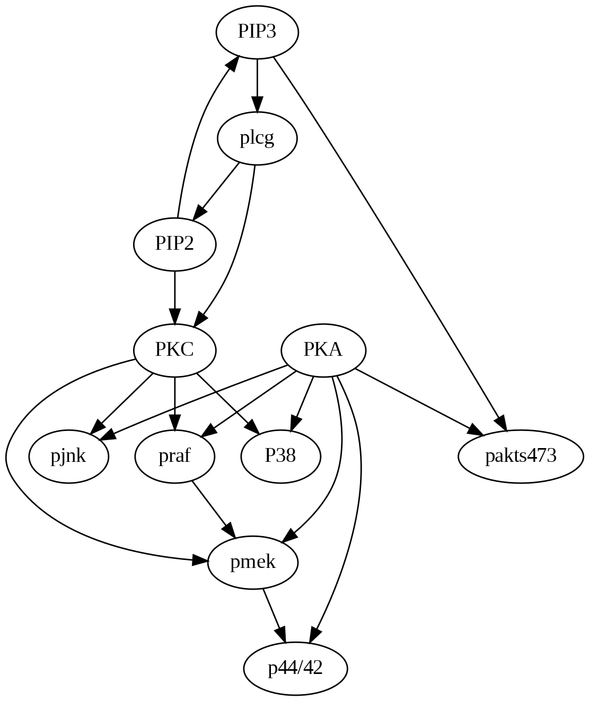
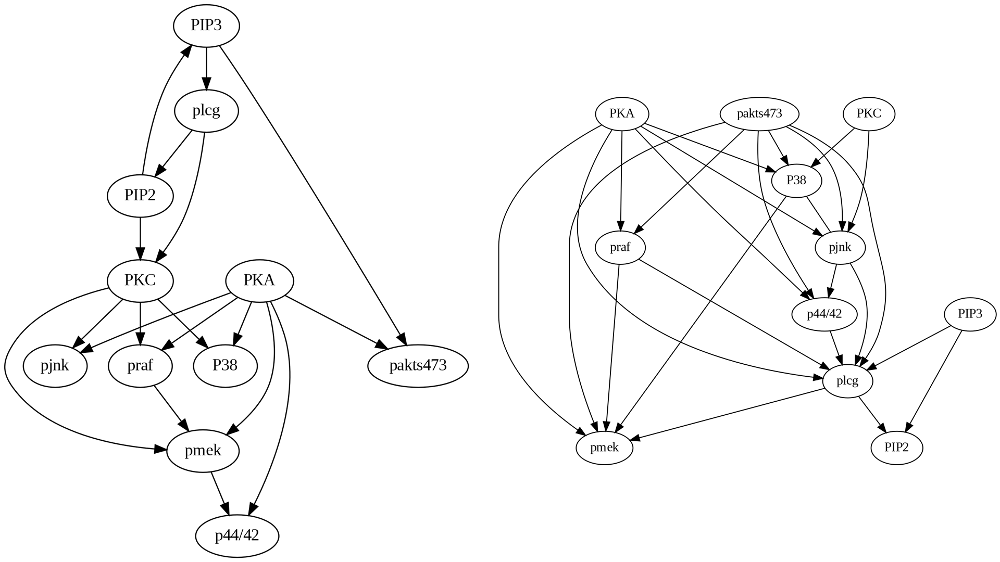
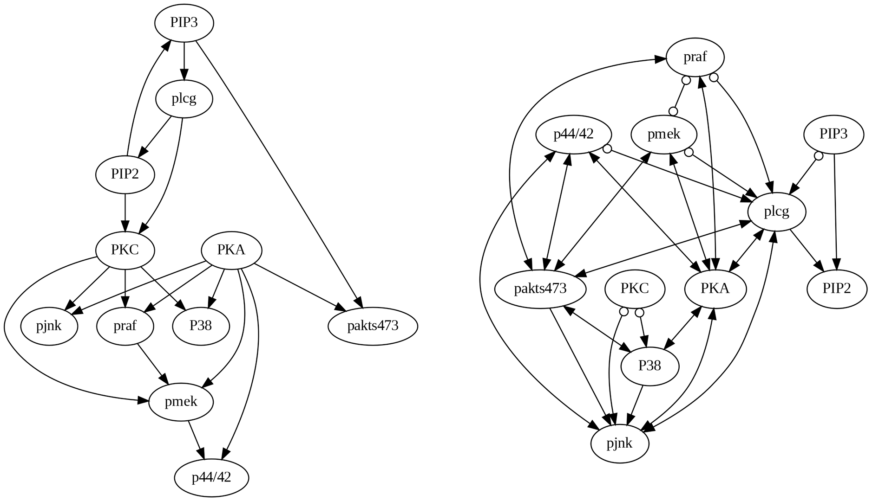
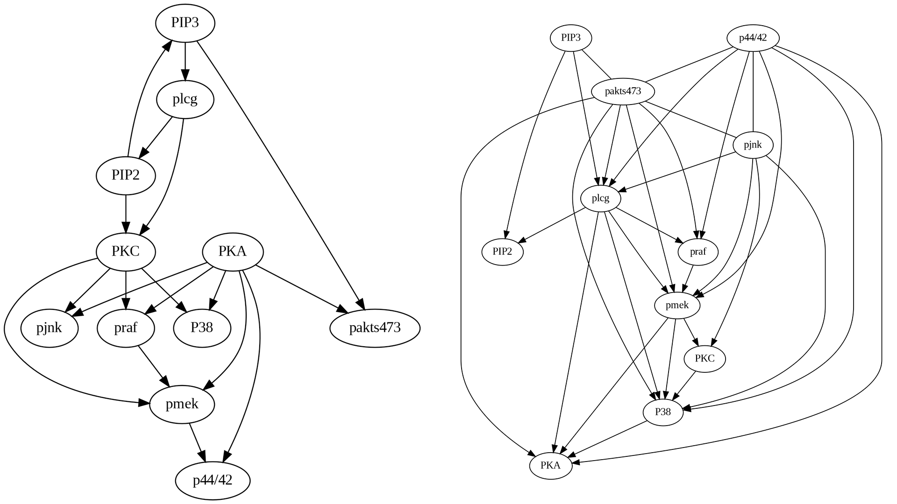
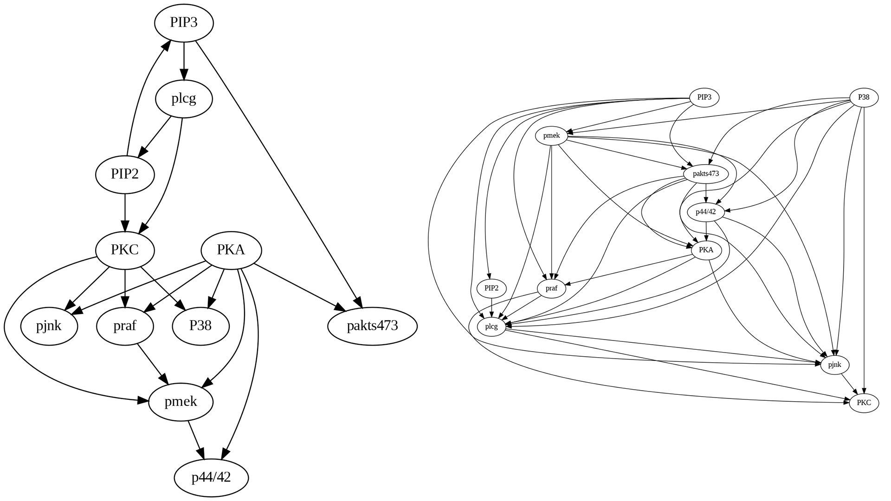

4 Causal Discovery
The fundamental assumption in causal inference using causal graphs has been the requirement of an established causal model for estimating the causal effect. However, constructing such models a priori is often challenging or unfeasible in practice. As an alternative, causal discovery or causal structure search, based on the analysis of statistical properties of purely observational data, has emerged as a crucial process for uncovering causal relationships.
This chapter provides an introduction and review of the computational techniques for causal discovery that have been developed for this purpose.A diverse set of assumptions are introduced that engender various types of causal discovery algorithms. These algorithms are subsequently explicated, and directed explicitly toward assessing their relative strengths and weaknesses. Finally, a case study is conducted in which the algorithms are applied to a real-world problem, demonstrating their utility in the realm of causal discovery.
4.1 Assumptions of Causal Discovery
In the realm of modeling and inference, a forward problem entails forecasting the outcome or response of a system or process based on a given set of inputs or parameters. For example, estimating the causal effect from the causal model is an example of a forward problem. In contrast, an inverse problem is the process of determining the inputs or parameters of a system or model based on a set of observed outcomes or responses. This involves working backward from the data to identify the underlying causes or inputs that led to the observed outcomes. One example of an inverse problem is discovering the causal model and structure based on observational data. Solving inverse problems is significantly more challenging since multiple causal models can be constructed from the same observational data (Maclaren and Nicholson 2019).
In the context of solving inverse problems, it is typical to rely on certain assumptions regarding the target of inquiry to narrow down the potential solutions and increase the likelihood of success. Four common assumptions are frequently utilized across causal discovery algorithms (Verma and Pearl 2022; Frydenberg 1990).
4.1.1 Markov Assumption
The Markov assumption in causal graphical models assumes that each node is conditionally independent of its non-descendants given its parent nodes. In other words, the Markov assumption states that once the parent nodes of a node are known, information about any other variables in the system is irrelevant in determining the value of that node. This assumption allows for simplifying complex causal structures into a set of conditional independence statements, which can be represented in a graphical model.
Tip
Thus, according to the Markov assumption, If the variables are d-separated in the graphical model \(G\), they are statistically independent in the observed data distribution \(P\).
\[ X \perp_{G} Y |Z \implies X \perp_{P} Y | Z \]
4.1.2 Faithfulness Assumptions
The faithfulness assumption is the reverse of the Markov assumption, which means that based on the statistical independencies in the distribution \(P\), one can deduce d-separations in the graph \(G\).
\[ X \perp_{G} Y |Z \Longleftarrow X \perp_{P} Y | Z\] Violations in faithfulness assumption occur when statistical dependencies in the observed data do not correspond to d-separations in the underlying causal graph. An example of violating the faithfulness assumption occurs when two causal pathways between the nodes cancel each other. Consequently, the nodes may seem statistically independent from the observed data, but they are not d-separated.
4.1.3 Causal Sufficiency
The causal sufficiency assumption in causal discovery is the assumption that all variables that have a causal effect on the outcome of interest are included in the analysis. In other words, the causal sufficiency assumption requires that no unmeasured or unobserved variables are causally related to both the exposure and the outcome.
4.1.4 Acyclicity
The acyclicity assumption in causal discovery assumes there should be no directed cycles (i.e., no feedback loops) in the causal graph.
4.2 From Assumptions to Structures
How do these assumptions help one to narrow the search in structural space? In causal graphical models, the concept of Markov equivalence is crucial as it pertains to the set of graphs that encode the same conditional independencies.
Tip
Specifically, two graphs are considered Markov equivalent if they correspond to the same set of conditional independencies. By understanding the Markov equivalence of different graph structures, one can simplify complex causal structures and identify equivalent graphical models with the same conditional independence properties.
It is worth noting that specific basic structures, such as chains and forks (discussed in Chapter 3), belong to the same Markov equivalence class. However, the basic immorality structure is distinct and constitutes its own Markov equivalence class. Applying the Markov and faithful assumptions to the data lets us deduce that all chains and forks have a standard skeleton. The skeleton of a graph is obtained by replacing all its directed edges with undirected edges.
Thus two important graph qualities that one can use to distinguish the structures are (1) Immoralities and (2) Skeleton, leading to an important theorem.
Two graphs are Markov equivalent if and only if they have the same skeleton and immoralities
Thus, we can discover a partially directed graph by using the observed data and analyzing the conditional dependencies to construct a skeleton and then apply the direction using the immoralities.
4.3 Causal Discovery Algorithms
In the forthcoming section, we will explore the realm of causal discovery algorithms’ role in uncovering causal relationships from observational or experimental data.
4.3.1 Constraint-Based Algorithms
Causal discovery through constraint-based methods typically involves the use of conditional independence tests. However, performing these tests can be challenging when the dependence between variables is still being determined. Despite this challenge, the constraint-based approach is generally applicable across a wide range of domains. The approach’s effectiveness depends heavily on the sample size, with larger sample sizes often necessary to achieve accurate conditional independence tests. A major disadvantage of the constraint-based approach is the reliance on the faithfulness assumption, which may be a strong assumption difficult to satisfy in practice.
4.3.1.1 PC Algorithm
The PC algorithm, proposed by Spirtes et al., is considered one of the oldest causal discovery algorithms whose foundation lies in the causal Markov condition and the faithfulness assumption and that there are no latent confounders (Spirtes et al. 2000).
Let us consider an example with a known causal structure and then follow the steps of the PC algorithm to uncover the same structure. Figure 4.1 shows the original causal graph and the steps followed in the PC algorithm.
Following are the steps in the PC algorithm:
- Form a complete undirected, fully connected graph with all the variables.
- Remove all the unconditionally independent edges from the observational data. In the example, we remove the edge \(X\) and \(Y\) because \(X \perp Y\).
- For every pair \((A,B)\), eliminate the edge between variables \(A\) and \(B\) if they have an edge between them and there exists a variable \(C\) with an edge connected to either \(A\) or \(B\) such that \(A/\) is conditionally independent of \(B\) given \(C\). In the example we remove the edges between \(X\) and \(W\) and also between \(Y\) and \(W\) because \(X \perp W|Y\) and \(Y \perp W|Z\)
- For every triple of variables \((A, B, C)\) where \(A\) and \(B\) are connected, \(B\) and \(C\) are connected, and \(A\) and \(C\) are not connected, establish the edges \(A → B ← C,\), provided that \(B\) was not included in the condition set that made \(A\) and \(C\) independent, and the edge between them was subsequently removed. Such a triple of variables is referred to as a v-structure. In the given example, the \(X-Y\) edge was eliminated without conditioning on \(Z\). Thus, we can orient the \(X-Z-Y\) edge as \(X → Z ← Y\).
- The process of orientation propagation involves orienting the edge \(B-C\) as \(B → C\) for every triple of variables where \(A → B-C\) and \(A\) and \(C\) are not adjacent. The orientation of \(Y → Z-W\) is determined as \(Y → Z → W\), resulting in the unique recovery of the true structure in this particular example.
Tip
The PC algorithm is designed to converge to the true Markov Equivalence Class if the conditional independence decisions are accurate in the limit of a large sample size.
4.3.1.2 FCI Algorithm
The Fast Causal Inference (FCI) is a constraint-based algorithm considered a more efficient and scalable version of the PC algorithm (Spirtes et al. 2000). The FCI algorithm is the more general form of the PC algorithm as it enables the identification of unknown confounding variables.
The FCI algorithm bears several similarities to the PC algorithm in terms of the steps involved in detecting the relationships or edges between variables. Like the PC algorithm, the FCI algorithm generates a causal graph by initially creating a fully connected undirected graph and subsequently eliminating edges linking conditionally independent variables.
Once the algorithm eliminates edges based on conditional independence, it proceeds to identify directions for the remaining edges wherever possible, leaving edges without directions when the direction is unknown. The graph in Figure 4.2 illustrates a true causal model with relationships and an observed confounding variable \(U\). After eliminating the edges based on conditional independence, it examines for colliders. For instance, when \(X\) and \(Z\) are unconditionally independent in a causal model, the \(X - Z\) edge can be eliminated without conditioning on \(Y\). In this scenario, the \(X - Y - Z\) triple is treated as a collider and oriented as \(X \rightarrow Y \leftarrow Z\) signifying that \(Y\) is a common effect of \(X\) and \(Z\). The bidirectional edge linking nodes \(Y\) and \(Z\) denotes the presence of an indeterminate confounding variable affecting the observed relationship between \(Y\) and \(Z\). The presence of circle symbols at nodes \(X\) and \(W\) signifies that the algorithm is unable to discern the directionality of the relationship between \(X\) and \(Y\), whether it is a directed edge from \(X\) to \(Y\), an unobserved confounder, or a combination thereof. This also holds true for the relationship between \(Y\), \(Z\) and \(W\) in a similar way.

Spirtes et al., introduced an adapted form of the FCI algorithm, the Anytime FCI (Spirtes 2001). Anytime FCI employs conditional independence tests involving conditioning sets smaller than a predetermined K threshold.
The Really Fast Causal Inference (RFCI) algorithm is characterized by its utilization of a reduced number of conditional independence tests when compared to the FCI algorithm (Colombo et al. 2012). Furthermore, RFCI tests condition on a smaller subset of variables. These optimizations confer a notable speed advantage to RFCI over FCI. Additionally, RFCI’s outcomes are inclined to be more reliable in the context of small samples, as high-order conditional independence tests exhibit diminished statistical power. However, the trade-off of these optimizations is that RFCI’s results may need to be more informative.
Additional extensions exist to current causal discovery algorithms, such as the CCD algorithm that operates without the requirement of acyclicity (Richardson 1996). Moreover, several methods based on SAT-based causal discovery are available, enabling us to dispense with the assumptions of causal sufficiency and acyclicity (Hyttinen et al. 2013).
4.3.2 Score-Based Algorithms
Score-based algorithms begin by creating a completely undirected graph, representing the conditional independence relationships inherent in the data. These algorithms iteratively modify this initial structure by adding and removing edges while simultaneously computing the corresponding scores. The goal is to select the structure that yields the highest score value. The selection of the score function is dependent on the specific algorithm and may include Bayesian Information Criterion (BIC), Akaike Information Criterion (AIC), and Maximum Likelihood (ML), among others. These functions balance the model complexity and goodness of fit to avoid overfitting, which could lead to unreliable causal inferences.
4.3.2.1 Greedy Equivalence Search Algorithm
The Greedy Equivalence Search (GES) is an algorithmic architecture for causal structure discovery (Chickering 2002). It is grounded on the principle of iteratively constructing a partially directed acyclic graph (PDAG) that represents the conditional independence relationships inherent in the data. The algorithm operates by initially creating an empty graph and iteratively adding edges based on score functions such as Bayes Information Score (BIC) or the Z-score that evaluate the goodness of fit between the data and the causal structure. GES incorporates a greedy search strategy, prioritizing the addition of edges that lead to the maximum increase in the score functions. Additionally, GES employs a backtracking mechanism to rectify incorrect edge directions.
A novel approach to causal discovery, introduced by Ogarrio et al. in 2016, is the GFCI algorithm, which combines the strengths of both GES and FCI (Ogarrio, Spirtes, and Ramsey 2016). GES is utilized to generate a supergraph of the skeleton, while FCI is employed to prune the supergraph and determine the correct orientations of the edges.
The Fast Greedy Equivalence Search (FGES) algorithm integrates the Greedy Equivalence Search (GES) and the Fast Causal Inference (FCI) algorithm differently (Bernaola et al. 2020). FGES utilizes a rapid, parallelized variant of GES, and similarly to FCI, it depends on “V” structures to establish edge directionality.
4.3.3 Semi-Parametric Algorithms
The causal inference techniques previously discussed have several limitations. Firstly, these methods rely on the faithfulness assumption, which posits that the observed conditional independence relationships in the data reflect the underlying causal structure. However, this assumption may not hold in specific scenarios, leading to inaccurate inferences. Secondly, many of these techniques require a large number of samples to accurately perform conditional independence tests, which can be a challenging constraint in specific applications. Finally, another limitation of these methods is that they can only identify Markov equivalent classes in the causal structures. This means that these techniques cannot always distinguish between different causal structures that yield the same conditional independence relationships, potentially leading to ambiguity in the resulting causal models.
Based on the works of Geiger and Pearl, and Meek, it was shown that in the case of multinomial distributions or linear Gaussian structural equations, it is possible to identify a graph only up to its Markov equivalence class (Geiger and Pearl 1990; Meek 2013). By relaxing constraints to encompass linear non-Gaussian noise settings and the nonlinear additive noise setting, semi-parametric assumptions are introduced. It has been demonstrated that the causal graph can be identified under both of these settings.
4.3.3.1 Linear Non-Gaussian Noise (LiNGAM)
In the linear non-Gaussian noise setting, all structural equations (the causal mechanisms responsible for producing the data) take the following form:
\[Y := f(X) + U\] where \(f(X)\) is a linear function, \(X \perp U\) and \(U\) is the unobserved non-Gaussian random distribution (Shimizu et al. 2006).
Based on the research of Darmois and Skitovich, it is possible to demonstrate identifiability in a linear non-Gaussian context (Darmois 1953; Skitovich 1954). Formally, in the linear non-Gaussian setting, if the true SCM is \[ Y := f(X) + U, X \perp U\] then, there does not exist an SCM in the reverse direction \[X := f(Y) + \tilde{U}, Y\perp \tilde{U}\] that can generate data consistent with \(P(X,Y)\).
Thus, in non-linear Gaussian setting, one can identify if the structure with two variables is either \(X \rightarrow Y\) or \(X \leftarrow Y\). The statistical way of interpreting this is: when fitting the data in the causal direction, the residuals obtained are independent of the input variable. However, when fitting the data in the anti-causal direction, the residuals become dependent on the input variable.
There have been a few extensions with based on various assumptions being relaxed, such as the multivariate one as presented by Shimizu et al., relaxing the causal sufficiency assumptions by Hoyer et al., and dropping the acyclicity assumptions by Lacerda et al. Lacerda et al. (2012).
4.3.3.2 Nonlinear Additive Noise
Another approach to attain identifiability in the causal graph is through the nonlinear additive noise setting, which is predicated on the assumption that all causal mechanisms are non-linear where the noise enters the system additively (P. Hoyer et al. 2008). Mathematically, this assumption can be expressed as:
\[\forall_i\ X_i := f(pa_i) +U_i\] where \(f\) is nonlinear and \(pa_i\) denotes the parents of \(X\).
Zhang and Hayvarinen proposed an extension where instead of nonlinear additive noise, there can be a post-nonlinear transformation after adding the noise (Zhang and Hyvarinen 2012). This can be expressed as:
\[\forall_i\ X_i := g(f(pa_i) +U_i). \ X\perp U\]
4.4 Case Study
In our case study, we plan to utilize the dataset from Sachs et al.’s seminal paper, demonstrating the feasibility of causal discovery in biological systems (Sachs et al. 2005). The study successfully reconstructed a known causal signaling pathway from a combination of experimental and observational flow cytometry measurements with near-perfect accuracy.
The effectiveness of the study can be attributed to several factors, such as the variables being unaffected by any known latent confounders and a combination of observations and perturbations being employed to facilitate the correct orientation of the recovered edges.
We will compare different algorithms with the true causal graphs to understand the relative merits of each. The code used in this case study can be found in this Colab notebook.
4.4.1 Dataset
The study measured 11 phosphorylated proteins and phospholipids using flow cytometry, including Raf (S259), MAPKs Erk1 and Erk2 (T202 and Y204), p38 MAPK (T180 and Y182), Jnk (T183 and Y185), AKT (S473), Mek1 and Mek2 (S217 and S221), PKA substrates (CREB, PKA, CaMKII, caspase-10, caspase-2), PLC-g (Y783), PKC (S660), PIP2, and PIP3.
| Phosphorylated Proteins / Phospholipids | Variable Name | Description |
|---|---|---|
| Raf | praf | Phosphorylation at S259 |
| Erk1 and Erk2 | p44/p42 | Phosphorylation at T202 and Y204 |
| p38 | p38 | Phosphorylation at T180 and Y182 |
| Jnk | pjnk | Phosphorylation at T183 and Y185 |
| AKT | pakts473 | Phosphorylation at S473 |
| Mek1 and Mek2 | pmek | Phosphorylation at S217 and S221 |
| PKA substrates | pka | Detects proteins and peptides containing a phospho-Ser/Thr residue with arginine at the –3 position |
| PKC | PKC | Detects phosphorylated PKC-\(\alpha\), -\(\beta\)I, -\(\beta\)II, -\(\delta\), -\(\epsilon\), -\(\eta\), and -\(\theta\) isoforms only at C-terminal residue homologous to S660 of PKC-\(\beta\)II |
| PLC-g | plcg | Phosphorylation at Y783 |
| PIP2 | PIP2 | Detects PIP2 |
| PIP3 | PIP3 | Detects PIP3 |
We use the raw dataset provided by the Casual Discovery toolbox
4.4.2 Tools and Libraries
We employed the causal-learn Python package in this case study to conduct a comprehensive causal analysis. For the visualization and management of graphs, we utilized the networkx library, pandas for correlation-based analysis, while the numpy library was employed for performing fundamental data handling tasks.
4.4.3 Analysis
To conduct our analysis, we will begin by performing a basic statistical data analysis to understand the correlations present and the distribution of the data.
From there, we will perform causal discovery using various algorithms. We will carefully analyze the results, looking for any missing edges, inaccurately directed causal relationships and incorrect relationships introduced by the algorithms.
Through this process, we aim to identify and summarize our observations based on the true causal graph. We will also compare the results obtained from each algorithm better to understand the strengths and weaknesses of each method.
4.4.3.1 Exploratory Data Analysis
Figure 4.3 shows that the dataset consists of 7466 observations for each of the 11 variables. The mean values of the variables vary significantly, with the smallest mean being 27.03 for PIP3 and the largest mean being 625.76 for PKA. The standard deviation (std) values also show considerable variation among the variables, indicating differing levels of dispersion around the mean for each variable. The smallest standard deviation is 43.05 for PIP3, while the largest is 644.46 for PKA. The 25th percentile (25%), 50th percentile (median or 50%), and 75th percentile (75%) values for each variable also show a wide range of values. The analysis indicates that the distributions of the variables are likely to be different and may have various degrees of skewness.

The scatter plot Fig.@fig-scatter shows some correlations that need to be analyzed for causal relationships, for example, between pmek and praf, plcg and PIP2, PKC and p38, etc.

4.4.3.2 True Causal Graph
Figure 4.5 shows the actual causal model as a DAG that we will use to compare and contrast with the algorithm-generated structures.

4.4.3.3 PC Algorithm
As shown in the code, causal-learn package provides a simple mechanism to run the algorithms with default parameters. We will not be optimizing the results for parameters in this case study.
from causallearn.search.ConstraintBased.PC import pc
from causallearn.utils.GraphUtils import GraphUtils
from IPython.display import Image
# default parameters
cg = pc(data)
pd_pc_graph = GraphUtils.to_pydot(cg.G)
# change the node labels
update_node_labels(pd_pc_graph,label_mapping)
# visualization using pydot
img = Image(pd_pc_graph.create_png())
display(img)
Upon comparing the true causal graph with the one generated by the PC algorithm, several observations can be made:
Many missing edges are present, such as PKA->pakts473, pmek->p44/42, and PIP3->pakts473.
Some edges exhibit incorrect directions, such as PIP3->PIP2.
The PC algorithm introduces erroneous edges, such as plcg->pmek.
4.4.3.4 FCI Algorithm
Upon comparing the true causal graph with the one generated by the FCI algorithm, as shown in Figure 4.7, several noteworthy observations can be made:
Numerous missing edges are present, such as PKA->pakts473, pmek->p44/42, and PIP3->pakts473, akin to the PC algorithm.
Some edges exhibit incorrect directions, such as PIP3->PIP2.
The FCI algorithm introduces a greater number of erroneous edges compared to the PC algorithm.
The FCI algorithm uniquely contributes bidirectional edges and circles (unknown). For instance, the PKA to p44/42 edge, which was correctly directed in the PC algorithm, has become bidirectional in the FCI algorithm. Similarly, the praf to pmek edge, which was accurately directed in the PC algorithm, appears bidirectionally open in the FCI algorithm.

4.4.3.5 GES Algorithm
Upon comparing the true causal graph with the one generated by the GES algorithm, as shown in Figure 4.8, several noteworthy observations can be made:
Similar to PC and FCI, the edges PKA->pakts473 and pmek->p44/42, are missing but PIP3->pakts473 has been discovered.
Some edges exhibit incorrect directions similar to PC and FCI, such as PIP3->PIP2.
Some new edges following the right direction in PC and FCI have been incorrect in GES, such as PKC->pjnk.

4.4.3.6 LiNGAM Algorithm
Comparing the true causal graph with the one generated by the LiNGAM algorithm, as shown in Figure 4.9, several interesting observations can be made:
Compared to PC and FCI, the edge pmek->p44/42 is the only missing, but the other two, i.e., PKA->pakts473 and PIP3->pakts473, have been discovered.
Some edges exhibit incorrect directions similar to PC, FCI, and GES, such as PIP3->PIP2.
Some new edges following the right direction in PC and FCI have been incorrect similar to GES, such as PKC->pjnk.

The present case study concludes that each algorithm possesses unique strengths and weaknesses, the selection of which should be predicated on the specific problem under consideration.
Bernaola, Nikolas, Mario Michiels, Pedro Larranaga, and Concha Bielza. 2020. “Learning Massive Interpretable Gene Regulatory Networks of the Human Brain by Merging Bayesian Networks.” bioRxiv, 2020–02.
Chickering, David Maxwell. 2002. “Optimal Structure Identification with Greedy Search.” Journal of Machine Learning Research 3 (Nov): 507–54.
Colombo, Diego, Marloes H Maathuis, Markus Kalisch, and Thomas S Richardson. 2012. “Learning High-Dimensional Directed Acyclic Graphs with Latent and Selection Variables.” The Annals of Statistics, 294–321.
Darmois, George. 1953. “Analyse générale Des Liaisons Stochastiques: Etude Particulière de l’analyse Factorielle Linéaire.” Revue de l’Institut International de Statistique, 2–8.
Frydenberg, Morten. 1990. “The Chain Graph Markov Property.” Scandinavian Journal of Statistics, 333–53.
Geiger, Dan, and Judea Pearl. 1990. “On the Logic of Causal Models.” In Machine Intelligence and Pattern Recognition, 9:3–14. Elsevier.
Hoyer, Patrik O, Shohei Shimizu, Antti J Kerminen, and Markus Palviainen. 2008. “Estimation of Causal Effects Using Linear Non-Gaussian Causal Models with Hidden Variables.” International Journal of Approximate Reasoning 49 (2): 362–78.
Hoyer, Patrik, Dominik Janzing, Joris M Mooij, Jonas Peters, and Bernhard Schölkopf. 2008. “Nonlinear Causal Discovery with Additive Noise Models.” Advances in Neural Information Processing Systems 21.
Hyttinen, Antti, Patrik O Hoyer, Frederick Eberhardt, and Matti Jarvisalo. 2013. “Discovering Cyclic Causal Models with Latent Variables: A General SAT-Based Procedure.” arXiv Preprint arXiv:1309.6836.
Lacerda, Gustavo, Peter L Spirtes, Joseph Ramsey, and Patrik O Hoyer. 2012. “Discovering Cyclic Causal Models by Independent Components Analysis.” arXiv Preprint arXiv:1206.3273.
Maclaren, Oliver J, and Ruanui Nicholson. 2019. “What Can Be Estimated? Identifiability, Estimability, Causal Inference and Ill-Posed Inverse Problems.” arXiv Preprint arXiv:1904.02826.
Meek, Christopher. 2013. “Strong Completeness and Faithfulness in Bayesian Networks.” arXiv Preprint arXiv:1302.4973.
Ogarrio, Juan Miguel, Peter Spirtes, and Joe Ramsey. 2016. “A Hybrid Causal Search Algorithm for Latent Variable Models.” In Conference on Probabilistic Graphical Models, 368–79. PMLR.
Richardson, Thomas. 1996. “Feedback Models: Interpretation and Discovery.” PhD thesis, Ph. D. thesis, Carnegie Mellon.
Sachs, Karen, Omar Perez, Dana Pe’er, Douglas A Lauffenburger, and Garry P Nolan. 2005. “Causal Protein-Signaling Networks Derived from Multiparameter Single-Cell Data.” Science 308 (5721): 523–29.
Shimizu, Shohei, Patrik O Hoyer, Aapo Hyvärinen, Antti Kerminen, and Michael Jordan. 2006. “A Linear Non-Gaussian Acyclic Model for Causal Discovery.” Journal of Machine Learning Research 7 (10).
Skitovich, Viktor Pavlovich. 1954. “Linear Forms of Independent Random Variables and the Normal Distribution Law.” Izvestiya Rossiiskoi Akademii Nauk. Seriya Matematicheskaya 18 (2): 185–200.
Spirtes, Peter. 2001. “An Anytime Algorithm for Causal Inference.” In International Workshop on Artificial Intelligence and Statistics, 278–85. PMLR.
Spirtes, Peter, Clark N Glymour, Richard Scheines, and David Heckerman. 2000. Causation, Prediction, and Search. MIT press.
Verma, Thomas S, and Judea Pearl. 2022. “Equivalence and Synthesis of Causal Models.” In Probabilistic and Causal Inference: The Works of Judea Pearl, 221–36.
Zhang, Kun, and Aapo Hyvarinen. 2012. “On the Identifiability of the Post-Nonlinear Causal Model.” arXiv Preprint arXiv:1205.2599.